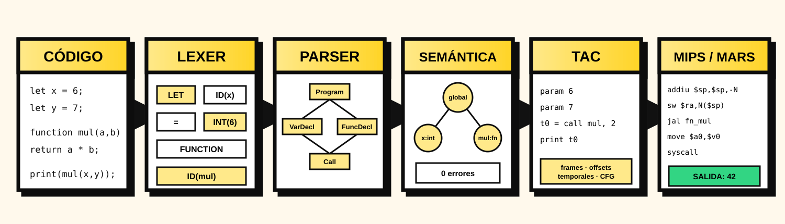

DragonsSlayers 2.0 · Sección 10
De Compiscript a
MIPS32 ejecutable
ANTLR, semántica, TAC, registros de activación, backend y validación real en MARS 4.5.
Daniel BarillasHugo BarillasErnesto Ascenciov3.0.0

ANTLR, semántica, TAC, registros de activación, backend y validación real en MARS 4.5.

El backend no recompila desde texto ni desde el CST. Recibe el resultado tipado del Proyecto 2 y selecciona instrucciones MIPS.
errores requeridos para generar MIPS
estados explícitos de la fase
artefacto final: `.asm`
# TAC t0 = b * 4 t1 = a + t0 resultado = t1 print resultado
# MIPS32 lw $t0, mem_b li $t1, 4 mul $t2, $t0, $t1 sw $t2, mem_t0 ... li $v0, 1 syscall
Los metadatos de tipo eligen ALU entera, coprocesador flotante, puntero o runtime de cadenas.
Reserva, guarda estado, fija `$fp` y copia argumentos.
Restaura `$s7`, `$ra`, `$fp`, libera el frame y ejecuta `jr $ra`.
pool administrado por `getReg`
soporte y punteros de función
spills observados en la suite
Cada instrucción TAC libera sus registros locales. Los valores vivos entre bloques se guardan en el frame, evitando depender de registros volátiles.
Longitud en word 0; elementos desde word 1.
4 * (i + 1)Tamaño y offsets definidos por `ClassLayout`.
GET_FIELD / SET_FIELDPuntero de función + capturas; `$s7` apunta al entorno.
jalr $t9`.asciiz`, concatenación y comparación byte a byte.
`l.s`, `s.s`, `add.s` y promoción con `cvt.s.w`.
| Patrón | Acción | Seguridad |
|---|---|---|
| `move $r, $r` | eliminar | no cambia estado |
| `addiu $sp,$sp,0` | eliminar | ajuste nulo |
| `j L` seguido de `L:` | eliminar salto | mismo fallthrough |
| `nop` consecutivo | conservar uno | delay slot ya cubierto |
No se implementa una fase global independiente; la mirilla se aplica al ensamblador generado y conserva la versión previa para auditoría.
Antes, Entrada válida y Archivo propio se detenían en semántica. Ahora solicitan el pipeline MIPS completo.
La descarga queda deshabilitada si el backend termina en `failed`.
Combina errores léxicos, sintácticos y semánticos.
Múltiples diagnósticos, estado `skipped`, ensamblador vacío y ninguna exportación inválida.
pruebas automatizadas
programas ejecutados en MARS
vulnerabilidades de producción
| Caso | Salida | Cubre |
|---|---|---|
| factorial | 120 | recursión y frames |
| programa integral | 2, 6, 12 | clase, método, llamadas anidadas |
| closure | 1 | puntero + entorno `$s7` |
| strings | Hola MIPS / true | runtime auxiliar |
Compiscript llega desde caracteres hasta MIPS32 real. Los estados impiden artefactos inválidos; la pila soporta llamadas y recursión; el heap cubre datos compuestos; y MARS confirma el comportamiento.